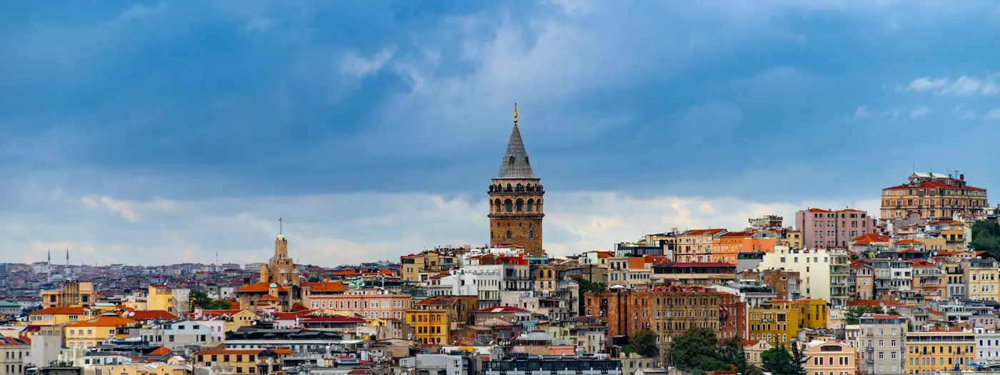

Istanbul and Ephesus
Escorted tour5 nightsRef 2502609

Included
- Europamundo general services: travel by bus with English-speaking guide, basic travel insurance, hotel and breakfast buffet.
- Arrival transfer.
- City tour in Istanbul.
- Boat trip on the Bosphorus in Istanbul.
- Evening transfer to Taksim Square in Istanbul.
- Ticket admission: Suleiman the Great Mosque and Topkapi Palace in Istanbul; House of the Virgin Mary, Basilica of St. John and the ruins of Ephesus.
- 1 dinner included in Kusadasi.
Day by day
- 1Arrival in Istanbul — Istanbul
- Welcome to your tour with Europamundo.
- Transfer to the hotel and free time.
- In the afternoon, information about the start of the tour is posted on the boards at the hotel reception.
- 2Istanbul — Istanbul
- Sightseeing tour of the city.
- Enter the Suleymaniye Mosque, the largest in Istanbul.
- Explore the ancient walls, the Golden Horn and the bustling fishing district.
- Admire the exterior of Hagia Sophia.
- Tickets included to visit Topkapi Palace, once the administrative heart of the Ottoman Empire, with its courtyards and pavilions.
- Free time in the afternoon to explore this city spanning two continents.
- Late afternoon transfer to Taksim, the city's most vibrant commercial district, with time to dine at one of its many restaurants and see the old tram; alternatively visit the nearby Galata Tower.
- 3Istanbul — Istanbul
- Boat trip on the Bosphorus (tickets included), lasting about two hours on a private boat exclusively for Europamundo travellers.
- Cruise the strait connecting the Black Sea with the Sea of Marmara, dividing Istanbul between its European and Asian sides.
- Pass under the two bridges linking Europe and Asia and admire the Sultan's palaces, traditional wooden houses and Ottoman architecture.
- Return to central Istanbul and free time.
- 4Istanbul - Ephesus - Kusadasi — Kusadasi
- Early departure from Istanbul, continuing the route through Turkey.
- Arrive around lunchtime at Ephesus, the best-preserved ancient city of Asia Minor, which two thousand years ago had a quarter of a million inhabitants.
- Visit the Basilica of St. John, the House of the Virgin Mary and the archaeological site (tickets included).
- Continue to Kusadasi, a popular coastal town known for its vibrant atmosphere, commercial life and quaint castle.
- Overnight in Kusadasi; dinner included.
- 5Kusadasi - Izmir - Bursa - Istanbul — Istanbul
- Set off for Izmir, the third most populous city in Turkey, with a brief guided tour of this metropolis, known as the most westernised and modern in the country.
- Head inland, pausing for lunch along the way, before arriving in Bursa.
- Bursa, the fourth largest city in Turkey, has a UNESCO World Heritage Site in its centre; highlights include the traditional commercial districts, mosques, religious schools, public baths and the renowned Green Mosque.
- Reach Istanbul by the end of the day.
- 6Istanbul - Departure — Istanbul
- After breakfast the journey comes to an end.
Good to know
- During high season, from May through October, accommodation is in Izmir instead of Kusadasi. In that case, after visiting Ephesus the tour heads directly to Izmir on the Aegean coast without stopping in Kusadasi, with a brief panoramic tour of the city; the following day, on the way to Istanbul, an additional stop is made in the traditional town of Balikesir, allowing time for lunch.
- Expected hotels are not listed in this document; they are published in the final part of the brochure and on the operator's "My Trip" page.